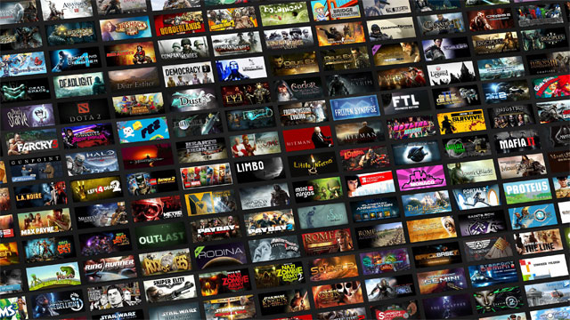

Videojuegos de consola

Cada año se publican miles de videojuegos en todas las plataformas. Por ejemplo, solo
en Steam puedes encontrar más de 30.000 títulos, por eso disfrutamos de grandísimos juegos
casi todos los meses, y muchos de ellos se convierten en títulos de referencia, o en iniciadores
de una saga. No hablamos de los juegos más vendidos, o los mejor puntuados, o los que más han
dado de que hablar. Es una mezcla de todas estas características que han mencionado anteriormente.
Los juegos más populares de la historia lógicamente deben estar entre los más vendidos o lo
más descargados (algunos son gratis), sino no serían conocidos. Pero también hemos valorado
que sean famosos incluso por personas que no los han jugado, o que no juegan habitualmente a
videojuegos. Que trasciendan la plataforma en la que se publicaron, e incluso en el propio mundo
de los videojuegos, también que hayan aguantado el paso del tiempo, y hoy en día sean perfectamente
jugables.
Quizá se sorprendan ver fuera de la lista a títulos como League of Legends, Fortnite o PUGB, sin duda
son juegos que se han vuelto popular en los últimos años y se han catalogado como los juegos más jugados
hasta la fecha. Pero para entrar en esta lista de los juegos más populares de la historia, deben reposar
un poco más. En esta presentación se hará un recorrido dentro de los últimos años por todos los juegos que
se han ido publicando y se hará una corta lista de los mejores juegos a criterio propio, al igual basadas
en su impacto en la sociedad, sin embargo, no se hará una clasificación de los mejores a los peores juegos
y viceversa si no que solo se le hará el reconocimiento al juego por sus grandes hazañas durante su periodo
de existencia.
La lista que se dará a continuación es la lista de los videojuegos que a criterio tanto personal como de
estadísticas he elegido, recuerde que no es una lista de cual es mejor o peor sino una lista que recopila
6 de los mejores juegos dentro de los últimos años de consola.